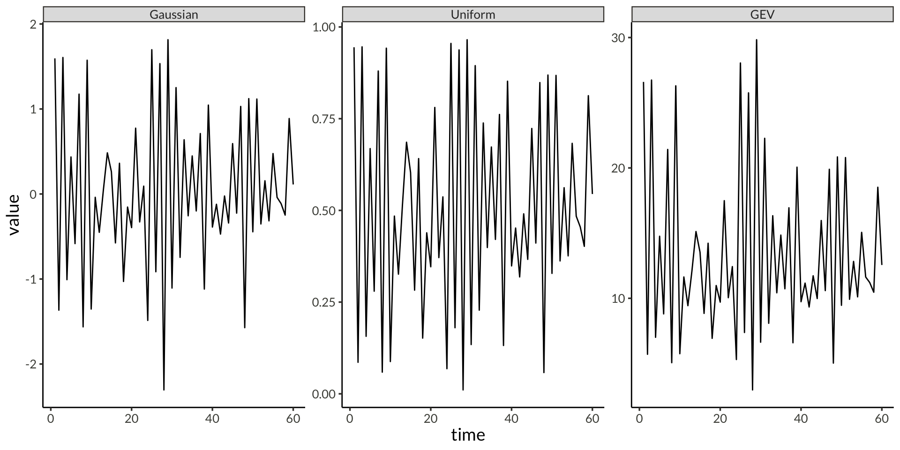
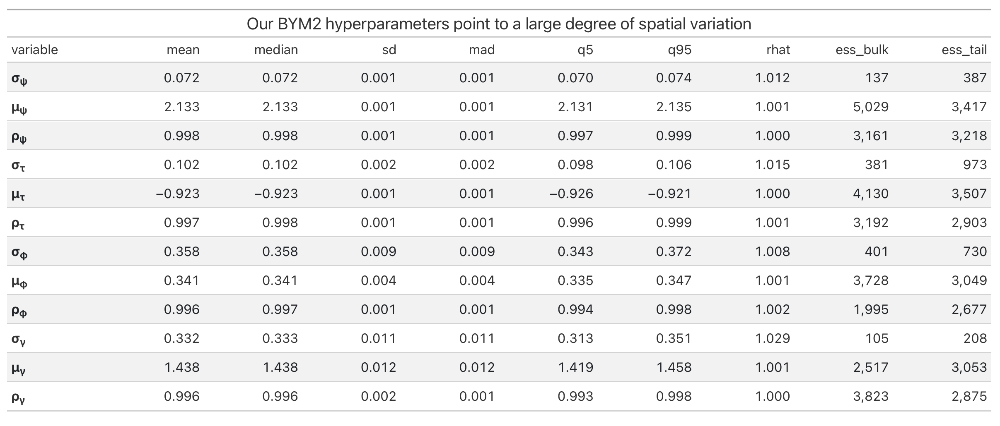

Gaussian Copulas for Large Spatial Fields
Modeling Data-Level Spatial Dependence in Multivariate Generalized Extreme Value Distributions
University of Iceland
Example
Example

Example
Example
Example
What’s going on?
- \(y_t\) is marginally \(\mathrm{GEV}(\mu, \sigma, \xi)\)
\[ \log f(y_t \vert \mu, \sigma, \xi) = - n\log\sigma - (1 + \frac{1}{\xi}) \sum_{i=1}^{n}{\log\left(1 + \xi\left[\frac{z_i - \mu}{\sigma} \right]\right)} - \sum_{i=1}^{n}{\left(1 + \xi \left[ \frac{z_i - \mu}{\sigma} \right]\right)}^{-1/\xi} \]
- \(\mathbf Y\) has a Gaussian AR(1) copula
\[ \begin{aligned} \log c(\mathbf{u}) &\propto \frac{1}{2}\log|\mathbf{Q}| - \frac{1}{2}\mathbf{z}^T\mathbf{Q}\mathbf{z} + \frac{1}{2}\mathbf{z}^T\mathbf{z} \\ u_t &= F_{\mathrm{GEV}}(y_t \vert \mu, \sigma, \xi) \\ z_t &= \Phi^{-1}(u_t) \end{aligned} \]
- How to estimate all of this?
Copulas
Sklar’s Theorem: For any multivariate distribution \(H\), there exists a unique copula \(C\) such that:
\[ H(\mathbf x) = C(F_1(x_1), \dots, F_d(x_d)) \]
where \(F_i\) are marginal distributions.
We can also write this as a (log) density
\[ \begin{aligned} h(x) &= c(F_1(x_1), \dots, F_d(x_d)) \prod_{i=1}^d f_i(x_i) \\ \log h(\mathbf x) &= \log c\left(F_1(x_1), \dots, F_d(x_d)\right) + \sum_{i=1}^d \log f_i(x_i) \end{aligned} \]
Have no fear

Stan Model
data {
int n_obs;
vector[n_obs] y;
}
transformed data {
real min_y = min(y);
}
parameters {
real<lower = -1, upper = 1> rho;
real<lower = 0> sigma;
real<lower = 0> xi;
real<lower = 0, upper = min_y + sigma / xi> mu;
}
model {
vector[n_obs] U;
target += gev_lpdf(y | mu, sigma, xi);
for (i in 1:n_obs) {
U[i] = gev_cdf(y[i] | mu, sigma, xi);
}
target += normal_copula_ar1_lpdf(U | rho);
// Priors
target += std_normal_lpdf(rho);
target += exponential_lpdf(sigma | 1);
target += exponential_lpdf(xi | 1);
}real normal_ar1_lpdf(vector x, real rho) {
int N = num_elements(x);
real out;
real log_det = - (N - 1) * (log(1 + rho) + log(1 - rho)) / 2;
vector[N] q;
real scl = sqrt(1 / (1 - rho^2));
q[1:(N - 1)] = scl * (x[1:(N - 1)] - rho * x[2:N]);
q[N] = x[N];
out = log_det - dot_self(q) / 2;
return out;
}
real normal_copula_ar1_lpdf(vector U, real rho) {
int N = rows(U);
vector[N] Z = inv_Phi(U);
return normal_ar1_lpdf(Z | rho) + dot_self(Z) / 2;
}Introduction
- UKCP Local Projections on a 5km grid over the UK (1980-2080) [1]
- Challenge: Modeling maximum daily precipitation in yearly blocks
- 43,920 spatial locations on a 180 x 244 grid
- Four parameters per location as in [2]
- Location, Trend, Scale, Shape
- Two aspects of spatial dependence:
- GEV parameters (ICAR models)
- Data-level dependence (Copulas)
Calculating Multivariate Normal Densities
\[ \log f(\mathbf{x}) \propto \frac{1}{2}\left(\log |\mathbf{Q}| - \mathbf{x}^T\mathbf{Q}\mathbf{x}\right) \]
Computational challenges
- Log Determinant: \(\log |\mathbf{Q}|\)
- Constant for a given precision matrix
- Quadratic Form: \(\mathbf{x}^T\mathbf{Q}\mathbf{x}\)
- Needs calculation for each density evaluation
Spatial Models
Conditional Autoregression (CAR) [5]
- \(\mathbf{D}\) is a diagonal matrix with \(D_{ii} = n_i\), the number of neighbours of \(i\)
- \(\mathbf{A}\) is the adjacency matrix with \(A_{ij} = A_{ji} = 1\) if \(i \sim j\)
\[ \begin{aligned} \mathbf{x} &\sim N(\mathbf{0}, \tau \mathbf{Q}) \\ \mathbf{Q} &= \mathbf{D}\left(\mathbf{I} - \alpha \mathbf{A} \right) \end{aligned} \]
Intrinsic Conditional Autoregression (ICAR) [6]
- \(\alpha = 1\), so \(\mathbf Q\) is singular, but constant
- Don’t have to calculate \(\log |\mathbf{Q}|\)
\[ \begin{aligned} \mathbf{x} &\sim N(\mathbf{0}, \tau \mathbf{Q}) \\ \mathbf{Q} &= \mathbf{D} - \mathbf{A} \end{aligned} \]
BYM (Besag-York-Mollié) Model [6]
- \(\mathbf{u}\) is the structured spatial component (Besag model)
- \(\mathbf{v}\) is the unstructured component (i.i.d. normal)
\[ \begin{aligned} \mathbf{x} &= \mathbf{u} + \mathbf{v} \\ \mathbf{u} &\sim \mathrm{ICAR}(\tau_u) \\ \mathbf{v} &\sim N(\mathbf{0}, \tau_v^{-1}) \end{aligned} \]
BYM2 Model [7–8]
- \(\rho\) models how much of variance is spatial
- \(s\) is a scaling factor chosen to make \(\mathrm{Var}(\mathbf u_i) \approx 1\)
\[ \begin{aligned} \mathbf{x} &= \left(\left(\sqrt{\rho/s}\right)\mathbf{u} + \left(\sqrt{1 - \rho}\right) \mathbf{v} \right)\sigma \\ \mathbf{u} &\sim \mathrm{ICAR}(1) \\ \mathbf{v} &\sim N(\mathbf{0}, n) \end{aligned} \]
Spatial Modeling on Parameter-level [9]
- \(\mu\): location parameter
- \(\mu = \mu_0 \left(1 + \Delta \left(t - t_0\right)\right)\)
- \(\sigma\): scale parameter
- \(\xi\): shape parameter \[ \begin{aligned} \log(\mu_0) = \psi &\sim \mathrm{BYM2}(\mu_\psi, \rho_\psi, \sigma_\psi) \\ \log(\mu_0) - \log(\sigma) = \tau &\sim \mathrm{BYM2}(\mu_\tau, \rho_\tau, \sigma_\tau) \\ f_\xi(\xi) = \phi &\sim \mathrm{BYM2}(\mu_\phi, \rho_\phi, \sigma_\phi) \\ f_\Delta(\Delta) = \gamma &\sim \mathrm{BYM2}(\mu_\gamma, \rho_\gamma, \sigma_\gamma) \end{aligned} \] 
Leftover Data-level Dependence
Our Approach: Matérn-like Gaussian Copula
\[ \begin{gathered} \log h(\mathbf x) = \log c\left(F_1(x_1), \dots, F_d(x_d)\right) + \sum_{i=1}^d \log f_i(x_i) \end{gathered} \]
Marginal CDFs
- \(F_i(x_i)\) is \(\mathrm{GEV}(\mu_i, \sigma_i, \xi_i)\)
- Can model parameter dependence with BYM2
\[ \begin{aligned} \log h(\mathbf x) &= \log c(u_1, \dots, u_d) \\ &+ \sum_{i=1}^d \log f_{\mathrm{GEV}}(x_i \vert \mu_i, \sigma_i, \xi_i) \\ u_i &= F_{\mathrm{GEV}}(x_i \vert \mu_i, \sigma_i, \xi_i) \end{aligned} \]
Gaussian Copula
- Matérn-like precision matrix \(\mathbf{Q}\) [10]
- If \(\mathbf{Q} = \mathbf{I}\) simplifies to independent margins
- Scaled so \(\boldsymbol{\Sigma} = \mathbf{Q}^{-1}\) is correlation matrix
- Need to calculate marginal variances [11–13]
- How to generate, scale and compute with \(\mathbf{Q}\) quickly (for MCMC)?
\[ \begin{aligned} \log c(\mathbf u) &\propto \frac{1}{2}\left(\log |\mathbf{Q}| - \mathbf{z}^T\mathbf{Q}\mathbf{z} + \mathbf{z}^T\mathbf{z}\right) \\ \mathbf{z} &= \Phi^{-1}(\mathbf u) \end{aligned} \]
The Precision Matrix
\(\mathbf Q\) defined as Kronecker sum of two AR(1) precision matrices, similar to [10]
\[ \mathbf{Q} = \left( \mathbf{Q}_{\rho_1} \otimes \mathbf{I_{n_2}} + \mathbf{I_{n_1}} \otimes \mathbf{Q}_{\rho_2} \right)^{\nu + 1}, \quad \nu \in \{0, 1, 2\} \]
\[ \mathbf{Q}_{\rho_{1}} = \frac{1}{1-\rho_{1}^2} \begin{bmatrix} 1 & -\rho_{1} & 0 & \cdots & 0 \\ -\rho_{1} & 1+\rho_{1}^2 & -\rho_{1} & \cdots & 0 \\ 0 & -\rho_{1} & 1+\rho_{1}^2 & \cdots & 0 \\ \vdots & \vdots & \vdots & \ddots & \vdots \\ 0 & 0 & 0 & \cdots & 1 \end{bmatrix} \]
\[ \mathbf{Q}_{\rho_{2}} = \frac{1}{1-\rho_{2}^2} \begin{bmatrix} 1 & -\rho_{2} & 0 & \cdots & 0 \\ -\rho_{2} & 1+\rho_{2}^2 & -\rho_{2} & \cdots & 0 \\ 0 & -\rho_{2} & 1+\rho_{2}^2 & \cdots & 0 \\ \vdots & \vdots & \vdots & \ddots & \vdots \\ 0 & 0 & 0 & \cdots & 1 \end{bmatrix} \]
\[ \mathbf Q = \begin{bmatrix} \frac{1}{(1-\rho_1^2)}\mathbf{I_{n_2}} + \mathbf{Q_{\rho_2}} & \frac{-\rho_1}{(1-\rho_1^2)}\mathbf{I_{n_2}} & \dots & \cdots & \dots \\ \frac{-\rho_1}{(1-\rho_1^2)}\mathbf{I_{n_2}} & \frac{(1+\rho_1^2)}{(1-\rho_1^2)}\mathbf{I_{n_2}} + \mathbf{Q_{\rho_2}} & \frac{-\rho_1}{(1-\rho_1^2)} \mathbf{I_{n_2}} & \cdots & \vdots \\ \vdots & \ddots & \ddots & \ddots & \vdots \\ \dots & \dots & \cdots & \frac{-\rho_1}{(1-\rho_1^2)} \mathbf{I_{n_2}} & \frac{1}{(1-\rho_1^2)}\mathbf{I_{n_2}} + \mathbf{Q_{\rho_2}} \end{bmatrix}^{\nu + 1} \]
Eigendecomposition
Because of how \(\mathbf{Q}\) is defined [14], we know that
\[ \begin{aligned} \mathbf{Q} &= \mathbf{V}\boldsymbol{\Lambda}\mathbf{V} \\ &= (\mathbf{V_{\rho_1}} \otimes \mathbf{V_{\rho_2}})(\boldsymbol \Lambda_{\rho_1} \otimes \mathbf{I} + \mathbf{I} \otimes \boldsymbol \Lambda_{\rho_2})^{\nu + 1}(\mathbf{V_{\rho_1}} \otimes \mathbf{V_{\rho_2}})^T \end{aligned} \]
where
\[ \begin{aligned} \mathbf{Q}_{\rho_1} = \mathbf{V_{\rho_1}}\boldsymbol \Lambda_{\rho_1}\mathbf{V_{\rho_1}}^T \qquad \& \qquad \mathbf{Q}_{\rho_2} = \mathbf{V_{\rho_2}}\boldsymbol \Lambda_{\rho_2}\mathbf{V_{\rho_2}}^T \end{aligned} \]
Spectral decomposition defined by value/vector pairs of smaller matrices
\[ \left\{\lambda_{\rho_1}\right\}_i + \left\{\lambda_{\rho_2}\right\}_j \]
\[ \left\{\mathbf{v}_{\rho_1}\right\}_i \otimes \left\{\mathbf{v}_{\rho_2}\right\}_j \]
- Problem: \(\boldsymbol \Sigma_{ii} = \left(\mathbf Q^{-1} \right)_{ii} \neq 1\)
- Solution: \(\mathbf{\widetilde Q} = \mathbf{D}\mathbf{Q}\mathbf{D}\), where \(\mathbf D_{ii} = \sqrt{\boldsymbol \Sigma_{ii}}\)
Marginal Standard Deviations
\[ \boldsymbol \Sigma = \mathbf Q^{-1} = (\mathbf{V}\boldsymbol\Lambda\mathbf{V}^T)^{-1} = \mathbf{V}\boldsymbol \Lambda^{-1}\mathbf{V} \]
We know that if \(A = BC\) then \(A_{ii} = B_{i, .} C_{., i}\), so
\[ \boldsymbol \Sigma_{ii} = \sum_{k=1}^{n} v_{ik} \frac{1}{\lambda_k} (v^T)_{ki} = \sum_{k=1}^{n} v_{ik} \frac{1}{\lambda_k} v_{ik} = \sum_{k=1}^{n} v_{ik}^2 \frac{1}{\lambda_k} \]
Compute vector \(\boldsymbol \sigma^2\) containing all marginal variances
\[ \boldsymbol \sigma^2 = \sum_{i = 1}^{n_1} \sum_{j=1}^{n_2} \frac{\left(\left\{\mathbf{v}_{\rho_1}\right\}_i \otimes \left\{\mathbf{v}_{\rho_2}\right\}_j\right)^{2}}{\quad\left(\left\{\lambda_{\rho_1}\right\}_i + \left\{\lambda_{\rho_2}\right\}_j\right)^{\nu+1}} \]
Marginal Standard Deviations
bench::mark(
"solve" = solve(Q) |> diag() |> sqrt() |> sort(),
"inla.qinv" = inla.qinv(Q) |> diag() |> sqrt() |> sort(),
"marginal_sd_eigen" = msd(Q1, Q2),
iterations = 10,
filter_gc = FALSE
)# A tibble: 3 × 6
expression min median `itr/sec` mem_alloc `gc/sec`
<bch:expr> <bch:tm> <bch:tm> <dbl> <bch:byt> <dbl>
1 solve 1.16s 1.17s 0.838 78.15MB 0.670
2 inla.qinv 377.65ms 382.19ms 2.52 4.35MB 0.252
3 marginal_sd_eigen 1.35ms 1.46ms 597. 647.36KB 0 Calculating the (non-copula) density
The Gaussian log pdf is \[ \log f(\mathbf{u} \vert \mathbf{Q}) \propto \frac{1}{2}\left(\log|\mathbf{Q}| - \mathbf{z}^T\mathbf{Q}\mathbf{z}\right) \]
Without scaling of \(\mathbf Q\) we get
\[ \log|\mathbf{Q}| = \sum_{k=1}^{n_1n_2}\log\lambda_k = \sum_{i=1}^{n_1}\sum_{j=2}^{n_2} \log\left[\left(\left\{\lambda_{\rho_1}\right\}_i + \left\{\lambda_{\rho_2}\right\}_j\right)^{\nu + 1}\right] \]
\[ \mathbf{z}^T\mathbf{Q}\mathbf{z} = \sum_{k=1}^{n_1n_2}\lambda_k \left(v_k^T\mathbf z\right)^2 = \sum_{i=1}^{n_1}\sum_{j=2}^{n_2} \left(\left\{\lambda_{\rho_1}\right\}_i + \left\{\lambda_{\rho_2}\right\}_j\right) \left[\left(\left\{\mathbf{v}_{\rho_1}\right\}_i \otimes \left\{\mathbf{v}_{\rho_2}\right\}_j\right)^T\mathbf z\right]^2 \]
Calculating the copula density
Let \(\mathbf v = \left\{\mathbf{v}_{\rho_1}\right\}_i \otimes \left\{\mathbf{v}_{\rho_2}\right\}_j\) and \(\lambda = \left(\left\{\lambda_{\rho_1}\right\}_i + \left\{\lambda_{\rho_2}\right\}_j\right)^{\nu + 1}\). Normalise \(\mathbf v\) and \(\lambda\) with
\[ \begin{gathered} \widetilde{\mathbf{v}} = \frac{\sigma \odot \mathbf{v}}{\vert\vert \sigma \odot\mathbf{v}\vert\vert_2}, \qquad \widetilde{\lambda} = \vert\vert \sigma \odot\mathbf{v}\vert\vert_2^2 \cdot \lambda \end{gathered} \]
Then \(\widetilde{\mathbf{v}}\) and \(\widetilde{\lambda}\) are an eigenvector/value pair of the scaled precision matrix \(\mathbf{\widetilde{Q}}\). Iterate over \(i\) and \(j\) to calculate
\[ \log c(\mathbf{u} \vert \mathbf{\widetilde{Q}}) = \frac{1}{2}\log|\mathbf{\widetilde Q}| - \frac{1}{2}\mathbf{z}^T\mathbf{\widetilde Q}\mathbf{z} + \frac{1}{2}\mathbf{z}^T\mathbf{z} \]
Folded Circulant Approximation
AR(1) precision
The exact form of \(Q_{\rho}\), the precision matrix of a one-dimensional AR(1) process with correlation \(\rho\)
\[ \mathbf{Q}_\rho = \frac{1}{1-\rho^2} \begin{bmatrix} 1 & -\rho & 0 & \cdots & 0 \\ -\rho & 1+\rho^2 & -\rho & \cdots & 0 \\ 0 & -\rho & 1+\rho^2 & \cdots & 0 \\ \vdots & \vdots & \vdots & \ddots & \vdots \\ 0 & 0 & 0 & \cdots & 1 \end{bmatrix} \]
Circulant Approximation
This approximation treats the first and last observations as neighbors, effectively wrapping the data around a circle. Very fast computation using FFT [4]
\[ \mathbf{Q}_\rho^{(circ)} = \frac{1}{1-\rho^2} \begin{bmatrix} 1+\rho^2 & -\rho & 0 & \cdots & 0 & -\rho \\ -\rho & 1+\rho^2 & -\rho & \cdots & 0 & 0 \\ 0 & -\rho & 1+\rho^2 & \cdots & 0 & 0 \\ \vdots & \vdots & \vdots & \ddots & \vdots & \vdots \\ -\rho & 0 & 0 & \cdots & -\rho & 1+\rho^2 \end{bmatrix} \]
Folded Circulant Approximation [15–16]
We double the data by reflecting it, giving us the data \(x_1, \dots, x_n, x_n, \dots, x_1\). We then model this doubled data with a \(2n \times 2n\) circulant matrix. Get fast computation like in circulant case, but better boundary conditions. Quadratic form written out as an \(n \times n\) matrix takes the form on the right.
\[ \mathbf{Q}_\rho^{(fold)} = \frac{1}{1-\rho^2} \begin{bmatrix} 1-\rho+\rho^2 & -\rho & 0 & \cdots & 0 & 0 \\ -\rho & 1+\rho^2 & -\rho & \cdots & 0 & 0 \\ 0 & -\rho & 1+\rho^2 & \cdots & 0 & 0 \\ \vdots & \vdots & \vdots & \ddots & \vdots & \vdots \\ 0 & 0 & 0 & \cdots & -\rho & 1-\rho+\rho^2 \end{bmatrix} \]
Exact Stan Model
real matern_copula_exact_lpdf(matrix Z, int dim1, real rho1, int dim2, real rho2, int nu) {
int n_obs = cols(Z);
int D = dim1 * dim2;
tuple(matrix[dim1, dim1], vector[dim1]) E1 = ar1_precision_eigen(dim1, rho1);
tuple(matrix[dim2, dim2], vector[dim2]) E2 = ar1_precision_eigen(dim2, rho2);
real log_det = 0;
real quadform_sum = 0;
vector[D] marginal_sds = marginal_sd(E1, E2, nu);
for (i in 1:dim1) {
for (j in 1:dim2) {
vector[D] v = kronecker(E1.1[, i], E2.1[, j]);
v = v .* marginal_sds;
real norm_v = sqrt(sum(square(v)));
v /= norm_v;
real lambda = pow(E1.2[i] + E2.2[j], nu + 1) * square(norm_v);
log_det += log(lambda);
row_vector[n_obs] q = v' * Z;
quadform_sum += dot_self(q) * lambda;
}
}
real z_squared = sum(columns_dot_self(Z));
return -0.5 * (quadform_sum - n_obs * log_det - z_squared);
}PSIS-LOO-CV
vector matern_cond_loglik(vector y, int dim1, real rho1, int dim2, real rho2, int nu) {
int D = dim1 * dim2;
tuple(matrix[dim1, dim1], vector[dim1]) E1 = ar1_precision_eigen(dim1, rho1);
tuple(matrix[dim2, dim2], vector[dim2]) E2 = ar1_precision_eigen(dim2, rho2);
vector[D] marginal_sds = marginal_sd(E1, E2, nu);
vector[D] g = rep_vector(0, D);
vector[D] tau_tilde = rep_vector(0, D);
for (i in 1:dim1) {
for (j in 1:dim2) {
vector[D] v = kronecker(E1.1[, i], E2.1[, j]);
v = v .* marginal_sds;
real norm_v = sqrt(sum(square(v)));
v /= norm_v;
real lambda = pow(E1.2[i] + E2.2[j], nu + 1) * square(norm_v);
g += v * lambda * v' * y;
tau_tilde += square(v) * lambda;
}
}Approximation
vector fold_data(vector x, int n1, int n2) {
vector[4 * n1 * n2] folded;
for (i in 1:n1) {
for (j in 1:n2) {
int idx = (i - 1) * n2 + j;
folded[(i - 1) * 2 * n2 + j] = x[idx];
folded[(i - 1) * 2 * n2 + (2 * n2 - j + 1)] = x[idx];
folded[(2 * n1 - i) * 2 * n2 + j] = x[idx];
folded[(2 * n1 - i) * 2 * n2 + (2 * n2 - j + 1)] = x[idx];
}
}
return folded;
}complex_matrix create_base_matrix_and_rescale_eigenvalues(int dim1, int dim2, real rho1, real rho2, int nu) {
matrix[dim2, dim1] c = make_base_matrix(dim1, dim2, rho1, rho2);
// Compute the eigenvalues and marginal standard deviation
complex_matrix[dim2, dim1] eigs = pow(fft2(c), (nu + 1.0));
complex_matrix[dim2, dim1] inv_eigs = pow(eigs, -1);
real mvar = get_real(inv_fft2(inv_eigs)[1, 1]);
eigs *= mvar;
return eigs;
}real matern_folded_copula_lpdf(matrix Z, int dim1, int dim2, real rho1, real rho2, int nu) {
int n_obs = cols(Z);
complex_matrix[2 * dim2, 2 * dim1] eigs = create_base_matrix_and_rescale_eigenvalues(2 * dim1, 2 * dim2, rho1, rho2, nu);
real quad_forms = 0;
real log_det = sum(log(get_real(eigs)));
for (i in 1:n_obs) {
vector[4 * dim1 * dim2] Z_fold = fold_data(Z[, i], dim1, dim2);
vector[4 * dim1 * dim2] Qz = matvec_prod(eigs, Z_fold);
quad_forms += dot_product(Z_fold, Qz) - dot_self(Z_fold);
}
return - 0.5 * (quad_forms - n_obs * log_det);
}Data Generation
Maximum Likelihood
Setup
Log-likelihood
log_lik <- function(par, Y) {
mu <- exp(par[1])
sigma <- exp(par[2] + par[1])
xi <- exp(par[3])
rho1 <- plogis(par[4])
rho2 <- plogis(par[5])
u <- evd::pgev(Y, loc = mu, scale = sigma, shape = xi)
z <- qnorm(u)
ll_marg <- sum(evd::dgev(Y, loc = mu, scale = sigma, shape = xi, log = TRUE))
ll_copula <- sum(dmatern_copula_eigen(z, dim1, dim2, rho1, rho2, nu))
ll_copula + ll_marg
}Optimize
Benchmark: Density Computations
| Unscaled | Scaled | |||||||
|---|---|---|---|---|---|---|---|---|
| Grid | Cholesky | Eigen | Eigen | Circulant | Folded | |||
| Time | Relative | Time | Relative | Time | Relative | |||
| 20x20 | 312.56µs | 155.88µs | 49.9% | 235.59µs | 36.2µs | 15.4% | 115.09µs | 48.9% |
| 40x40 | 1.77ms | 543.76µs | 30.7% | 1.65ms | 115.8µs | 7.0% | 300.9µs | 18.3% |
| 60x60 | 6.33ms | 1.8ms | 28.5% | 7.1ms | 188.48µs | 2.7% | 609.71µs | 8.6% |
| 80x80 | 17.98ms | 5.17ms | 28.8% | 21.96ms | 338.15µs | 1.5% | 1.26ms | 5.7% |
| 100x100 | 38.58ms | 11.48ms | 29.8% | 48.44ms | 445.14µs | 0.9% | 2.37ms | 4.9% |
| 120x120 | 81.1ms | 22.74ms | 28.0% | 88.45ms | 719.55µs | 0.8% | 2.82ms | 3.2% |
| 140x140 | 145.26ms | 32.55ms | 22.4% | 168.38ms | 965.71µs | 0.6% | 5.39ms | 3.2% |
| 160x160 | 233.03ms | 54.51ms | 23.4% | 260.7ms | 1.27ms | 0.5% | 5.33ms | 2.0% |
| 180x180 | 359.21ms | 97.4ms | 27.1% | 482.93ms | 1.61ms | 0.3% | 10.22ms | 2.1% |
| 200x200 | 567.01ms | 147.51ms | 26.0% | 676.53ms | 1.84ms | 0.3% | 8.62ms | 1.3% |
| 220x220 | 791.13ms | 206.13ms | 26.1% | 994.11ms | 2.59ms | 0.3% | 13.55ms | 1.4% |
| 240x240 | 1.07s | 287ms | 26.8% | 1.34s | 2.82ms | 0.2% | 14.77ms | 1.1% |
See https://bggj.is/materneigenpaper/ for a description of algorithms and https://github.com/bgautijonsson/stdmatern for implementations |
||||||||
Approximating the Correlation Matrix
Conclusion and Future Work
Key Results
- Developed Matérn-like Gaussian copula for large spatial fields
- Folded circulant approximation to the density
- Achieved fast density computations
- Viable for MCMC samplers
Future Work
- Implement t-copulas
- Apply to other environmental and climate datasets
- Finish drafting paper
- R package
PhD Committee
My thanks to my advisor and committee
- Birgir Hrafnkelsson (PI)
- Raphaël Huser
- Stefan Siegert